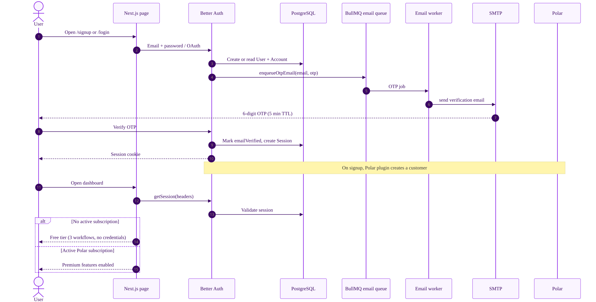
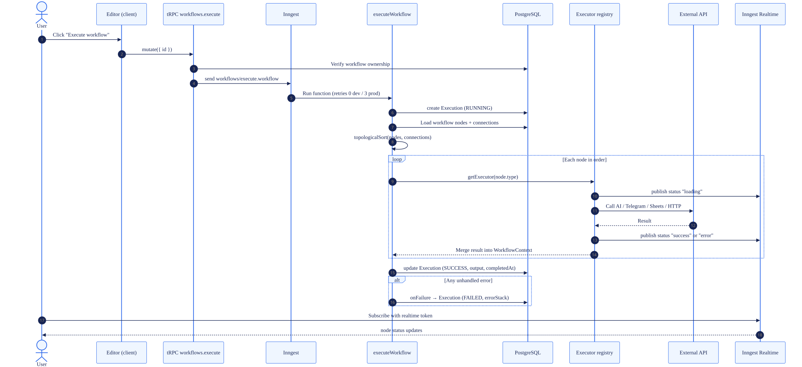

A top-down view of Nodebase: the system boundary, runtime topology, code layers, data model, authentication and billing, the visual editor, the durable execution engine, trigger ingress, security, reliability, and deployment.
Sections 03–04 describe the whole system from the outside in. Sections 05–08 explain how the codebase is organised and how identity, tenancy, and billing work. Sections 09–12 cover the product core: the visual editor, execution engine, triggers, and the node extension model. Sections 13–16 cover cross-cutting concerns and operations. The appendix is a reference for routes, tRPC procedures, node types, and environment configuration.
Runtime processes in development: Next.js, Inngest dev server, email worker, cron worker, ngrok, mprocs supervisor.
Node types across triggers, AI, HTTP, messaging, and Google Sheets.
Durable Inngest function — executeWorkflow — runs every execution.
Nodebase lets users compose a workflow on a drag-and-drop canvas, connect trigger and action nodes, and run it reliably. The product combines a Next.js monolith for UI and APIs with Inngest for durable execution, Redis-backed queues for scheduling and email, and PostgreSQL as the system of record.
WorkflowContext through per-node executors.Execution; per-node status is published over Inngest Realtime and rendered live on the canvas.The Next.js application owns pages, tRPC, auth, webhooks, and the Inngest function endpoint. Execution state and retries are delegated to Inngest rather than run in the request cycle. This keeps the UI fast and gives long-running AI/HTTP work durable retries.
Workflows, nodes, connections, credentials, and executions live in PostgreSQL. Inngest events carry only a workflow id plus optional initial data; the function re-reads the graph from the database at execution time.
Each product area owns its tRPC router, prefetch helpers, nuqs params, hooks, and components under src/features. Routers are composed once in src/trpc/routers/_app.ts.
A node type appears in the editor, executes at runtime, and streams status because it is registered in the Prisma enum, realtime channel map, executor registry, React Flow node registry, and node selector.
| Attribute | How it is achieved |
|---|---|
| Durability | Inngest functions with step-based execution, 3 retries in production, failure handler marking executions FAILED, and per-step memoisation. |
| Tenant isolation | Every workflow, credential, and execution query is scoped by the authenticated user id. Credentials are encrypted at rest and never returned decrypted to clients. |
| Elastic integrations | Executors are isolated modules with a common interface, a typed registry, and a shared realtime channel contract. |
| Backpressure / abuse control | Better Auth rate limits, per-webhook Upstash sliding-window limits, idempotency keys, and OTP cooldown plugin. |
| Operability | Health endpoint, structured execution records, Sentry instrumentation, Docker standalone image, Vercel build command. |
The stack is deliberately consolidated around TypeScript. One language spans the editor, API, background execution, and database access.
| Layer | Technology | Role in Nodebase |
|---|---|---|
| Web & UI | Next.js 15.5 (App Router, Turbopack), React 19, Tailwind v4, Radix UI | Server components, route handlers, API endpoints, dashboard, auth screens, editor shell, dialogs, tables. |
| Canvas | @xyflow/react (React Flow 12) | Node graph editing, connections, minimap, controls, custom node renderers. |
| API | tRPC v11 + TanStack React Query + SuperJSON | Type-safe client/server calls, prefetch + hydration, cache invalidation. |
| Database | PostgreSQL + Prisma 6 | Relational model for users, workflows, nodes, connections, credentials, executions. |
| Auth | Better Auth + Prisma adapter | Email/password, email OTP, GitHub and Google OAuth, sessions, rate limiting. |
| Billing | Polar SDK + Better Auth plugin | Customer creation, checkout, customer portal, active-subscription checks. |
| Durable jobs | Inngest + realtime middleware | Workflow execution, retries, step orchestration, per-node realtime channels. |
| Queues | BullMQ + ioredis on Upstash Redis | OTP email delivery and cron schedule registration/removal. |
| AI & templating | Vercel AI SDK + OpenAI/Anthropic/Google providers, Handlebars | AI action nodes with credential-based keys; runtime interpolation of prompts, URLs, bodies, sheet ids/ranges, and values from context. |
| Integrations | ky, googleapis, Telegram Bot API, Discord/Slack webhooks | HTTP request node and messaging/Sheets action nodes. |
| Observability & tooling | Sentry, Biome, TypeScript, tsx, mprocs, dotenv-cli | Error capture, lint/format, type checking, worker execution, multi-process dev orchestration. |
| State | Owner | Notes |
|---|---|---|
| Workflow graph | PostgreSQL | Nodes and connections are persisted through a tRPC update transaction. The editor keeps a transient copy while editing. |
| Editor interaction state | React Flow + Jotai | editorAtom holds the React Flow instance; isDirtyAtom tracks unsaved changes. |
| Server data cache | TanStack Query | Server pages prefetch and dehydrate; client hooks use suspense queries and invalidate after mutations. |
| URL filters/pagination | nuqs | Parsed on the server and hydrated on the client for workflows, credentials, and executions lists. |
| Run status | Inngest Realtime | Ephemeral per-node status messages; durable run outcome is stored in Execution. |
| Schedules | Redis (BullMQ) | Repeatable jobs keyed as cron:<nodeId>:<scheduleId>, reconciled when a workflow is saved or deleted. |
| Idempotency / rate limits | Upstash Redis | Webhook dedupe keys with TTL and sliding-window per-workflow limits. |
Nodebase is a multi-tenant web application. Authenticated users and machines (through webhooks) enter through the Next.js application. Work is executed asynchronously by Inngest using executors that call third-party APIs.

executeWorkflow; PostgreSQL and Redis hold durable and transient state; executors call external providers.| Actor | Interaction |
|---|---|
| End user | Signs up / logs in, creates and edits workflows, configures nodes and credentials, runs workflows, views execution history and node status. |
| Webhook provider | Sends Google Form responses, Stripe events, or Telegram updates to public route handlers. These requests are not session-authenticated; they are protected by per-workflow rate limits, idempotency keys, and provider-specific secrets. |
| Inngest | Receives events, calls the served function at /api/inngest, retries failed steps, and relays published realtime messages. |
| Scheduler / worker | A separate BullMQ cron worker fires Inngest events at scheduled times. The email worker sends OTP messages outside the request cycle. |
| Third-party APIs | AI providers, Telegram, Discord, Slack, Google Sheets, arbitrary HTTP endpoints, SMTP, GitHub/Google OAuth, and Polar billing. |
/api/inngest, so executors have access to the same Prisma client, encryption key, and environment configuration as the web tier.Production can run as a Next.js standalone container behind a load balancer (Docker/EKS) or on Vercel. In both cases Inngest, PostgreSQL, and Redis are managed outside the application process.

| Component | Process | Responsibility |
|---|---|---|
| Next.js server | next start / standalone server.js | RSC pages, client bundles, tRPC, Better Auth, webhook routes, Inngest function endpoint, health check. |
| Email worker | tsx src/queue/worker.ts | Consumes BullMQ email queue; sends OTP mail through SMTP with concurrency 2. |
| Cron worker | tsx src/queue/cron-worker.ts | Consumes BullMQ cron queue; converts each fired schedule into a workflows/execute.workflow event with initial cron data. |
| Inngest | Managed cloud / dev server | Schedules and runs executeWorkflow, retries steps, records runs, and fans out realtime messages. |
| PostgreSQL | Managed database | Primary datastore; Prisma migrations create the schema. |
| Redis (Upstash) | Managed Redis | BullMQ queues via the ioredis-compatible URL; rate limiting and idempotency via the REST API. |
npm run dev:all starts mprocs, which supervises five processes: ngrok (public webhook tunnel), Inngest dev server, email worker, cron worker, and the Next.js dev server with Turbopack. npm run inngest:dev starts only the Inngest dev UI; the application serves functions at /api/inngest.
vercel.json sets the build command to npm run vercel-build, which runs prisma generate && next build. Prisma targets native and rhel-openssl-3.0.x. Sentry wrapping is enabled only when SENTRY_AUTH_TOKEN is present.
The Dockerfile uses three stages: deps (npm ci, Prisma generate), builder (Next build with standalone output), and runner (non-root nextjs user, standalone server, Prisma schema and CLI). node:22-slim with OpenSSL is used because Prisma needs it.
The application is a layered modular monolith. Data flows inward through the App Router, tRPC boundary, feature modules, and domain services.

src/lib, src/inngest, and src/queue encapsulate infrastructure.| Layer | Location | Contract |
|---|---|---|
| Presentation | src/app, src/components | Server pages call requireAuth()/requireUnauth(), prefetch tRPC data, wrap output in HydrateClient, and render client components inside Suspense and error boundaries. |
| API boundary | src/app/api/trpc, src/trpc | HTTP fetch adapter exposes appRouter. Procedure tiers add session and subscription checks. SuperJSON preserves dates and complex values. |
| Feature modules | src/features/<feature> | Each module owns server/routers.ts, server/prefetch.ts, server/params-loader.ts, params.ts, hooks/, and components/. |
| Domain services | src/lib, src/inngest, src/queue | Prisma access, encryption, auth, billing, queues, rate limits, idempotency, Inngest client/functions/channels, executor registry. |
| Data & external | PostgreSQL, Redis, provider APIs | Durable state and third-party side effects. Only server-side code accesses these systems. |
requireAuth() reads the session from request headers and redirects unauthenticated users to /login. Auth pages use requireUnauth() to redirect signed-in users to /workflows.cache(makeQueryClient).<HydrateClient> dehydrates the query cache into a HydrationBoundary, so client components render instantly without a loading flash.useSuspenseQuery through feature hooks and mutate via tRPC, invalidating related query keys on success.| Procedure | Behaviour |
|---|---|
baseProcedure | Raw tRPC procedure with SuperJSON transformer. No session requirement. |
protectedProcedure | Calls auth.api.getSession({ headers }) and throws UNAUTHORIZED when no session exists. The resolved session is attached to ctx.auth. |
premiumProcedure | Builds on protected: fetches the Polar customer by external id and throws FORBIDDEN unless at least one active subscription exists. |
createTRPCContext is a stub that returns { userId: "user_123" }. Authorization must rely on ctx.auth.user.id set by protectedProcedure, never on ctx.userId.The codebase is organised by product capability rather than technical artefact. Each module is a vertical slice with server and client responsibilities.
| Feature | Responsibilities | Key files and components |
|---|---|---|
| auth | Login, registration, email verification, auth layout and forms. Consumes Better Auth client and server session helpers. | features/auth/components/*, lib/auth.ts, lib/auth-client.ts, lib/auth-utils.ts, app/api/auth/[...all] |
| workflows | Workflow CRUD, ownership checks, pagination/search, graph load/save, execution trigger, free-tier limits, cron cleanup on delete. | features/workflows/server/routers.ts, prefetch.ts, hooks/use-workflows.ts, components/workflows.tsx |
| credentials | Encrypted credential CRUD, pagination/search, lookup by type for node dialogs. Creation gated by premium procedure. | features/credentials/server/routers.ts, components/credential.tsx, lib/encryption.ts |
| editor | React Flow canvas, dirty state, save header, add-node palette, execute button, editor instance atom. | features/editor/components/editor.tsx, editor-header.tsx, store/atoms.ts, config/node-components.ts |
| executions | Execution history and detail pages, node status hook, executor registry, per-node executors and dialogs, realtime channels, topological sort consumers. | features/executions/server/routers.ts, components/<node>/executor.ts, lib/executor-registry.ts, hooks/use-node-status.ts |
| trigger | Manual, cron, Google Form, Stripe, and Telegram triggers. Cron schedule reconciliation; webhook URL generation in dialogs; trigger executors. | features/trigger/components/*, lib/queue/cron.ts, app/api/webhooks/*, app/api/telegram/webhook/[workflowId] |
| subscriptions | Client subscription state hook and upgrade modal integration. | features/subscriptions/hooks/use-subscription.ts, components/upgrade-modal.tsx, lib/subscription.ts |
app-sidebar, app-header, entity list states (loading/empty/error), theme provider/toggle, page transition, node selector, upgrade modal, and a large Radix-based UI kit under src/components/ui.
Prisma client singleton, encryption, SMTP email, Telegram helpers and markdown conversion, Google Sheets client, Polar client and subscription check, Upstash rate limiting, Redis idempotency, queue connection/queue factories, and constants for pagination/limits.
A single appRouter combines three feature routers: workflows, credentials, and executions. New feature routers are registered in src/trpc/routers/_app.ts, which also exports the inferred appRouter type consumed by the client and hooks.
The schema separates identity (Better Auth tables), tenant-owned assets (workflows and credentials), graph structure (nodes and connections), and run history (executions).

| Entity | Design notes |
|---|---|
User | Primary key is a Better Auth string id. Email is unique. Relations cascade to sessions, accounts, workflows, and credentials. |
Workflow | Belongs to a user. Holds a display name, timestamps, and the graph via child nodes/connections. Deleting a workflow cascades to its graph and executions. |
Node | Belongs to a workflow. type is a Prisma enum. position and data are JSON, keeping node-specific configuration flexible without schema changes per node. Optional credentialId links an encrypted credential. |
Connection | Directed edge from one node output to another node input. Uniqueness on (fromNodeId, toNodeId, fromOutput, toInput) prevents duplicate edges. Cascades when either node is deleted. |
Credential | Type is one of ANTHROPIC, GEMINI, OPENAI, TELEGRAM, GOOGLE_SHEETS. value stores the Cryptr-encrypted secret. Never sent decrypted to the browser. |
Execution | One row per run. inngestEventId is unique and links the row to the Inngest event. Status is RUNNING/SUCCESS/FAILED; error text and stack are stored for failed runs; output holds the final workflow context. |
Session, Account, Verification | Managed by Better Auth/Prisma adapter. Account stores OAuth tokens or password hash; Verification supports OTP/verification flows. |
userId: ctx.auth.user.id; executions are filtered through workflow.userId.SELECT ... FOR UPDATE inside a transaction before counting workflows, preventing concurrent creates from bypassing the free-tier limit.prisma/migrations; the Prisma client is generated into src/generated/prisma at install/build time.Better Auth is the identity provider embedded in the Next.js app. It uses Prisma/PostgreSQL for persistence, email OTP for verification, social OAuth for convenience, and a Polar plugin for subscriptions.

| Capability | Implementation |
|---|---|
| Email + password | Better Auth email/password enabled with auto sign-in. Email verification is required before access; signup and sign-in can resend verification. |
| Email OTP | emailOTP plugin: 6 digits, 5-minute expiry, hashed storage, 5 allowed attempts, overrides default email verification. Sending is delegated to enqueueOtpEmail. |
| OTP cooldown | A custom Better Auth plugin intercepts /email-otp/send-verification-otp before a new code is generated. otpSendAllowed(email) prevents burning the queue and invalidating a previously sent code. |
| OAuth | GitHub and Google social providers configured from environment secrets. Trusted origins include the app URL, auth URL, and localhost variants. |
| Rate limits | Global Better Auth limit of 20 requests per 60s; OTP send limited to 3/min; OTP verify limited to 8 per 5 minutes. |
| Sessions | Server components and tRPC procedures call auth.api.getSession({ headers }). Session cookies are handled by the Better Auth route handler at /api/auth/[...all]. |
sendVerificationOTP.enqueueOtpEmail adds an otp job to the BullMQ email queue. If Redis is not configured, it falls back to sending inline.sendOtpEmail, which uses Nodemailer/SMTP. In development without SMTP it logs the OTP instead of failing.Creates a customer on signup, exposes checkout for the Nodebase Pro product, and a customer portal. The app uses the Polar SDK in sandbox mode with an access token.
premiumProcedure requires at least one active subscription. Credential creation uses it. Workflow creation checks subscription server-side and caps free users at 3 workflows; the usage endpoint reports count, limit, and premium state.
isActiveSubscriber() catches Polar errors and returns false, so billing outages degrade to free-tier limits rather than crashing workflow creation. Premium tRPC procedures still perform a direct Polar lookup and will reject when it fails.The editor is a client-side React Flow instance hydrated with a workflow loaded through tRPC. Node appearance and behaviour are selected by a type registry; graph persistence is handled by a single tRPC mutation.
| Concern | Implementation |
|---|---|
| Canvas | ReactFlow with pan-on-scroll, selection-on-drag, grid snapping, background, controls, and minimap. Nodes and edges are local state initialised from the suspense query result. |
| Node rendering | nodeComponents maps every NodeType to a React component. Shared bases provide consistent handles, status indicators, and layout. |
| Editing | Node/edge changes are applied through React Flow helpers. Non-selection changes set isDirtyAtom. New connections use addEdge. |
| Editor instance | editorAtom stores the React Flow instance so the header can call getNodes() and getEdges() when saving. |
| Node configuration | Each node type has a dialog that writes configuration into node.data. Credentials are selected by type and referenced by id; secret values never leave the server. |
| Execution control | The execute button is shown only when a manual trigger exists. It calls workflows.execute. |
| Realtime status | Each node uses useNodeStatus with its channel and a server action that returns an Inngest subscription token. Status values are initial, loading, success, and error. |
Pressing Save sends the complete node and edge snapshot to workflows.update. The server verifies ownership, then inside a transaction:
data only when the client sends a non-empty object, protecting configuration when the editor has an incomplete snapshot.syncCronSchedules to reconcile BullMQ repeatable jobs.Workflows, credentials, and executions share an entity-page pattern: server-side auth and prefetch, URL-driven pagination/search through nuqs, suspense queries on the client, and reusable loading/empty/error states. The editor page sits in a separate route group so it can use a full-height canvas layout without the standard dashboard content shell.
All runs enter Inngest as workflows/execute.workflow. The single executeWorkflow function creates an execution record, loads the graph, sorts it, and runs each node's executor in sequence while publishing live status.

NonRetriableError.step.run("create-execution") inserts an Execution with status RUNNING and the unique Inngest event id. A database conflict is treated as non-retriable.topologicalSort. If connections are empty, nodes retain their order. Disconnected nodes are added as self-edges. Cycles raise an error.userId is loaded and passed to executors so credential lookups remain tenant-scoped.event.data.initialData seeds the mutable WorkflowContext (for example googleForm, stripe, telegram, or cron).getExecutor(node.type) resolves the implementation. The executor receives node data, id, user id, context, the Inngest step tool, and the realtime publish function.onFailure, which marks the execution FAILED and stores the error message and stack.| Input | Purpose |
|---|---|
data | Node-specific configuration persisted in the JSON column (prompts, endpoint, variable name, credential id, operation, etc.). |
nodeId | Identifies the node for realtime status messages. |
userId | Scopes credential reads to the workflow owner. |
context | Accumulated outputs from earlier nodes; used as the Handlebars template context. |
step | Inngest step tools, used for memoised/retryable units such as HTTP calls, credential reads, and AI generation. |
publish | Realtime publish function bound to the node's channel. |
Every node type has a dedicated Inngest channel. Each published message has the shape { nodeId, status } where status is loading, success, or error. The browser obtains a short-lived subscription token through a server action, then filters the latest message for the node. This is presentation-only state; the durable outcome is the Execution row.
json helper pretty-prints context values, enabling prompts and request bodies to embed prior node output. Validation failures publish error and throw NonRetriableError so Inngest does not retry misconfiguration.All trigger paths converge on the same Inngest event. They differ in how the event is produced and what initial data is attached.

| Trigger | Ingress | Initial data and notes |
|---|---|---|
| Manual | tRPC workflows.execute | Verifies workflow ownership, then sends the event with only workflowId. The execute button is visible when a manual trigger node exists. |
| Cron | BullMQ repeatable scheduler → cron worker | Schedules are stored in cron node data and registered with upsertJobScheduler. Key is cron:<nodeId>:<scheduleId>; timezone, start/end date, and cron pattern are honoured. Worker sends initialData.cron. |
| Google Form | POST /api/webhooks/google-form?workflowId= | Normalises form id/title/response id/timestamp/respondent/responses/raw into initialData.googleForm. Idempotency key uses response id. |
| Stripe | POST /api/webhooks/stripe?workflowId= | Normalises event id/type/timestamp/livemode/object into initialData.stripe. Idempotency key uses event id. |
| Telegram | POST /api/telegram/webhook/[workflowId] | Resolves the workflow's Telegram trigger node and credential, decrypts the bot token, and validates the Telegram secret header with a timing-safe comparison. Messages become initialData.telegram; callback queries are acknowledged without starting a run. |
Cron schedules are owned by the node data, not by a separate schedule table. When a workflow is saved, syncCronSchedules(workflowId) authenticates the user, filters cron nodes, registers each schedule, and removes schedulers whose node ids no longer exist. Deleting a workflow explicitly removes its cron schedulers before deleting the database row. Upsert semantics make repeated saves idempotent.
Upstash sliding-window limiter per workflow: Google Form 30/min, Stripe 120/min, Telegram 60/min by default, configurable through environment variables.
A Redis SET NX EX key with 24-hour TTL suppresses duplicate provider deliveries. When Redis is absent, events are accepted without dedupe.
Telegram uses a derived bot secret and constant-time comparison. Stripe and Google Form rely on provider configuration and workflow-scoped URLs; no session is required.
Node types are intentionally explicit. A new capability is added by editing five registries so the database, runtime, editor, and UI stay in sync.

| # | Touchpoint | What to add |
|---|---|---|
| 1 | prisma/schema.prisma → NodeType | New enum value plus a migration. Node type is persisted on every node row. |
| 2 | src/inngest/channels/ | Realtime channel definition. Register it in the executeWorkflow function's channel list. |
| 3 | src/features/executions/components/<type>/executor.ts | Executor implementing the common contract; publish loading/success/error; validate config; read credentials server-side. Register in executor-registry.ts. |
| 4 | src/features/executions/components/<type>/node.tsx | React Flow node component. Register in src/config/node-components.ts. |
| 5 | src/features/executions/components/<type>/dialog.tsx | Configuration dialog and node selector entry. Trigger nodes live under src/features/trigger. |
| Category | Node types |
|---|---|
| Trigger | Manual trigger, Cron trigger, Google Form trigger, Stripe trigger, Telegram trigger, Initial placeholder |
| AI | OpenAI, Anthropic, Gemini — credential-backed text generation with system/user prompt templates |
| HTTP | HTTP request — method, templated endpoint/body, JSON or text response stored under a variable name |
| Messaging | Telegram send message, Telegram send buttons, Discord, Slack |
| Productivity | Google Sheets — append, read, or update rows with a service-account credential |
ExecutorRegistry requires an entry for every NodeType, so adding an enum value without an executor is a compile-time error. The NodeTypes map similarly keeps the editor registry exhaustive.Security relies on session validation inside procedures, ownership predicates on every tenant asset, encryption of secrets, and layered protections for unauthenticated webhooks.
| Control | Implementation |
|---|---|
| Authentication | Better Auth sessions validated from request headers. protectedProcedure rejects missing sessions with UNAUTHORIZED. Server pages redirect through requireAuth. |
| Authorization / tenancy | All workflow, credential, node, and execution access is scoped by the authenticated user or through workflow.userId. There is no cross-tenant id lookup path in the exposed routers. |
| Plan gating | premiumProcedure validates active Polar subscriptions. Credential creation is premium-only. Workflow creation enforces a server-side free cap of 3 with a row lock. |
| Secret storage | Credentials are encrypted with Cryptr using ENCRYPTION_KEY. Decryption occurs only inside executors and the Telegram webhook handler, never in list/detail responses. |
| Webhook authenticity | Telegram secret token is derived per bot/workflow and compared with timingSafeEqual. Public webhook URLs are workflow-scoped; rate limits and idempotency reduce abuse and replay. |
| Abuse prevention | Better Auth global and OTP-specific rate limits; OTP cooldown plugin; Upstash per-workflow webhook limits; duplicate suppression through Redis. |
| Transport & headers | Trusted origins restrict Better Auth callbacks. Production is expected to terminate TLS at the load balancer or platform edge. Dev ngrok origins are explicitly allowed. |
| Error reporting | Sentry captures server, edge, and client errors. Execution errors are persisted for user-visible run history. |
ctx.auth.user.id from the session attached by protectedProcedure. The stub userId is a constant and does not represent the caller.Reliability is achieved through durable execution, explicit non-retriable validation errors, durable run records, and queue-level retry policies.
| Component | Policy / behaviour |
|---|---|
| Inngest function | retries: 3 in production, 0 in development. Steps are memoised; failed steps retry without re-running successful ones. |
| Node validation | Missing endpoint, method, credential, prompt, variable name, spreadsheet id/range, etc. publish error and throw NonRetriableError. |
| Function failure handler | onFailure updates the Execution by unique Inngest event id to FAILED and stores message and stack. |
| Execution creation conflict | Unique inngestEventId protects against duplicate execution rows; the conflict is surfaced as non-retriable. |
| Email queue | 3 attempts with exponential backoff (2s), completed jobs removed, up to 1000 failed jobs retained. |
| Cron queue | 3 attempts with exponential backoff (5s), completed jobs removed, up to 100 failed jobs retained. Scheduler upserts are idempotent. |
| Webhook duplicates | Redis SET NX idempotency key returns success without emitting a second event; TTL 24 hours. |
| Rate limiting outage | When Upstash REST credentials are absent, rate limiting and idempotency are disabled with warnings rather than breaking ingress. |
| Billing outage | Subscription check for workflow creation degrades to free tier; premium procedures fail closed with FORBIDDEN. |
Status, timestamps, final output, error message and stack per run. UI exposes history and detail pages.
Per-node loading/success/error messages let users see progress while a durable run is in flight.
Server/edge instrumentation plus onRequestError capture. Optional source map upload and tunnel route.
GET /api/health returns { status: "ok" } for load balancer or platform probes.
/admin/queues/[[...path]] exposes an email-queue dashboard; in production it is disabled unless dashboard credentials are configured.
Workers log completed/failed jobs. Email has a development OTP fallback for local testing.
npx tsc --noEmit, and a production build. Adding integration tests around trigger ingress, execution ordering, and tenancy is the highest-value reliability improvement.Nodebase can be delivered as a Vercel application or a standalone container, provided the auxiliary workers and managed services are running.
| Command | Purpose |
|---|---|
npm run dev | Next.js dev server with Turbopack. |
npm run dev:all | mprocs supervisor: ngrok, Inngest dev, email worker, cron worker, Next.js. |
npm run worker | Email worker via dotenv + tsx. |
npm run cron-worker | Cron worker via dotenv + tsx. |
npm run build / npm run start | Production Next.js build and server. |
npm run vercel-build | prisma generate && next build for Vercel. |
npx prisma migrate dev / deploy | Create/apply migrations in development or production. |
npm run lint | biome check (lint + import organisation). |
npx tsc --noEmit | Type checking (no dedicated script). |
| Group | Variables |
|---|---|
| Core | DATABASE_URL, NEXT_PUBLIC_APP_URL, NODE_ENV |
| Auth | BETTER_AUTH_SECRET, BETTER_AUTH_URL, GOOGLE_CLIENT_ID, GOOGLE_CLIENT_SECRET, GITHUB_CLIENT_ID, GITHUB_CLIENT_SECRET |
| Security | ENCRYPTION_KEY (Cryptr), UPSTASH_REDIS_REST_URL, UPSTASH_REDIS_REST_TOKEN |
| Billing | POLAR_ACCESS_TOKEN, POLAR_SUCCESS_URL |
| Execution | INNGEST_EVENT_KEY, INNGEST_SIGNING_KEY |
| Queues | UPSTASH_REDIS_URL (ioredis-compatible connection for BullMQ) |
SMTP_HOST, SMTP_PORT, SMTP_USER, SMTP_PASS, EMAIL_FROM | |
| Rate limits | RATE_LIMIT_GOOGLE_FORM_PER_MIN, RATE_LIMIT_STRIPE_PER_MIN, RATE_LIMIT_TELEGRAM_PER_MIN |
| Observability | SENTRY_AUTH_TOKEN (optional build upload) |
/api/inngest at the public app URL.The architecture favours a small number of well-understood primitives: one web application, one durable function, explicit registries, and managed state. The trade-offs are intentional.
| Decision | Rationale | Trade-off |
|---|---|---|
| Inngest for workflow execution | Long-running AI and HTTP calls need retries, step memoisation, and a failure handler without building a custom job runner. | Execution depends on Inngest availability and correct signing/event configuration. The function is served by the web container, so the web tier must remain reachable. |
| BullMQ for cron and email | Repeatable jobs provide precise cron scheduling with timezones and start/end dates. Email delivery is decoupled from signup latency. | Two extra worker processes must be deployed and monitored. Redis is a hard dependency for cron/email. |
| PostgreSQL as workflow source of truth | Graph state is easy to inspect, migrate, and query. Events stay small and point at a workflow id. | The graph is re-read at execution time; editing during a run affects only future runs, and very large graphs add query overhead. |
| Explicit node registries | Compile-time exhaustiveness catches missing executors/renderers. Node behaviour stays colocated and reviewable. | Adding a node requires coordinated edits across five areas and a migration. |
| Encrypt credentials at rest | Provider secrets are valuable; they should never be readable from the database or client bundle. | Key rotation and ENCRYPTION_KEY management become critical operational concerns. |
| Upsert + selective data overwrite on save | Protects node configuration from incomplete client snapshots while still supporting deletion and rewiring. | More complex transaction logic than delete-and-recreate; requires careful client snapshot semantics. |
| Realtime per-node channels | Users get immediate visual feedback without polling the database. | Status is ephemeral; reconnecting clients may miss transient transitions. Durable history is the Execution row. |
createTRPCContext returns a hard-coded user id. Any future code that trusts it for authorization would create a tenant-isolation vulnerability. Keep authentication inside procedures.
The OpenAI executor publishes an Anthropic channel message on the missing-credential branch. This can leave OpenAI nodes visually stuck; the channel import should be corrected.
There is no test runner configured. Regression coverage for topological sort, trigger ingress, idempotency, tenancy, and executor contracts is missing.
next.config.ts sets typescript.ignoreBuildErrors: true. CI should run tsc --noEmit explicitly or the build can ship type errors.
Stripe and Google Form webhooks are workflow-scoped and rate-limited but do not verify provider signatures in the route handlers. Adding signature verification would harden ingress.
Cron and email correctness depends on separately running workers. A deployment that only ships the Next.js container silently loses scheduling and email delivery.
| Route | Purpose |
|---|---|
/ | Landing page. |
/login, /signup, /verify-email | Auth pages; redirect signed-in users away. |
/workflows | Workflow list with search and pagination. |
/workflows/[workflowId] | Full-screen React Flow editor. |
/credentials, /credentials/new, /credentials/[credentialId] | Credential list, create, and edit. |
/executions, /executions/[executionId] | Run history and run detail. |
/api/trpc/[trpc] | tRPC fetch handler. |
/api/auth/[...all] | Better Auth handler (session, OAuth, OTP, Polar plugin endpoints). |
/api/inngest | Inngest serve endpoint for executeWorkflow. |
/api/webhooks/google-form?workflowId= | Google Form webhook ingress. |
/api/webhooks/stripe?workflowId= | Stripe webhook ingress. |
/api/telegram/webhook/[workflowId] | Telegram bot update ingress with secret validation. |
/api/health | Liveness/readiness probe. |
/admin/queues/[[...path]] | BullMQ queue dashboard route. |
| Router | Procedure | Tier / behaviour |
|---|---|---|
| workflows | execute | Protected mutation; ownership check then Inngest event. |
| workflows | create | Protected mutation; free cap with row lock, premium bypass. |
| workflows | usage | Protected query; count, free limit, premium state. |
| workflows | remove | Protected mutation; removes cron schedulers, then deletes. |
| workflows | update | Protected mutation; transactional node upsert/delete, connection replacement. |
| workflows | updateName | Protected mutation. |
| workflows | getOne | Protected query; transforms nodes/connections to React Flow shapes. |
| workflows | getMany | Protected paginated/search query. |
| credentials | create, update | Create is premium; value encrypted before persistence. |
| credentials | remove, getOne, getMany, getByType | Protected; owner-scoped; type lookup feeds node dialogs. |
| executions | getOne, getMany | Protected; scoped through workflow.userId. |
| Node type | Executor / behaviour |
|---|---|
| INITIAL | Mapped to manual trigger executor for placeholder nodes. |
| MANUAL_TRIGGER | Passes context through; enables the editor execute button. |
| CRON_TRIGGER | Passes context; schedule registration is handled by BullMQ, not the executor. |
| GOOGLE_FORM_TRIGGER / STRIPE_TRIGGER / TELEGRAM_TRIGGER | Pass through initial data supplied by their webhook routes. |
| HTTP_REQUEST | ky call with Handlebars-resolved endpoint/body; response stored under variable name. |
| OPENAI / ANTHROPIC / GEMINI | AI SDK text generation with decrypted provider credential and templated prompts. |
| TELEGRAM_SEND_MESSAGE / TELEGRAM_SEND_BUTTONS | Telegram Bot API calls using decrypted bot token; markdown conversion helper available. |
| DISCORD / SLACK | Webhook-based message delivery. |
| GOOGLE_SHEETS | Service-account JWT; append, read, or update rows. |
Document scope. This architecture reflects the repository contents and configuration at generation time. Diagrams are rendered from Mermaid sources stored alongside this PDF in docs/architecture/; the editable HTML source is docs/architecture/system-architecture.html.